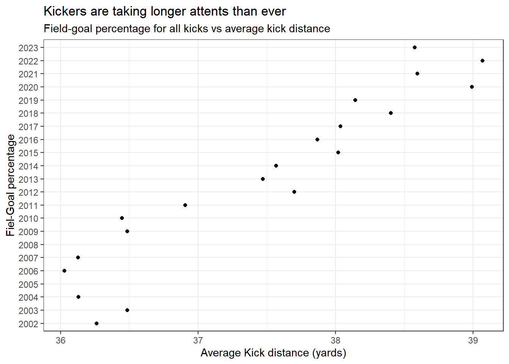

# A tibble: 20,566 × 13
Date Tm Opp Quarter Time Down ToGo Location Score Detail EPB
<date> <chr> <chr> <dbl> <tim> <dbl> <dbl> <chr> <chr> <chr> <dbl>
1 2013-12-15 Packe… Cowb… 1 08:21 4 12 DAL 39 3-3 Mason… 0.66
2 2013-12-15 Vikin… Eagl… 1 09:33 4 14 PHI 37 0-0 Blair… 0.79
3 2013-12-15 Bills Jagu… 1 03:32 4 3 JAX 36 3-3 Dan C… 0.89
4 2013-11-17 Bronc… Chie… 1 12:38 4 9 KAN 36 3-0 Matt … 0.88
5 2013-09-29 Vikin… Stee… 1 12:12 4 8 PIT 36 3-0 Blair… 0.88
6 2013-12-15 Jets Pant… 1 00:01 4 10 CAR 36 3-3 Nick … 0.88
7 2013-09-23 Bronc… Raid… 1 00:53 4 9 RAI 35 10-0 Matt … 0.97
8 2013-11-10 Packe… Eagl… 1 06:28 4 14 PHI 35 0-0 Mason… 0.97
9 2013-09-29 Jagua… Colts 1 08:18 4 4 CLT 35 3-0 Josh … 0.98
10 2013-09-26 49ers Rams 1 09:12 4 13 RAM 35 0-0 Phil … 0.97
# ℹ 20,556 more rows
# ℹ 2 more variables: EPA <dbl>, Diff <dbl> [1] "Date" "Tm" "Opp" "Quarter" "Time" "Down"
[7] "ToGo" "Location" "Score" "Detail" "EPB" "EPA"
[13] "Diff" # A tibble: 22 × 2
years yards
<chr> <dbl>
1 2002 36.3
2 2003 36.5
3 2004 36.1
4 2005 NA
5 2006 36.0
6 2007 36.1
7 2008 NA
8 2009 36.5
9 2010 36.4
10 2011 36.9
# ℹ 12 more rows